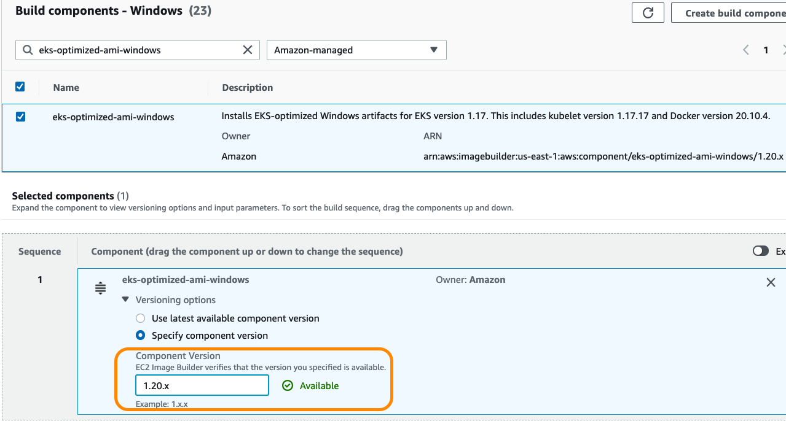

Amazon EKS에 최적화된 윈도우 AMI 관리¶
Amazon EKS 최적화 AMI는 윈도우 서버 2019를 기반으로 구축되었으며, 아마존 EKS 윈도우 노드의 기본 이미지 역할을 하도록 구성되어 있습니다. AMI는 즉시 Amazon EKS와 함께 작동하도록 구성되어 있으며 도커, kubelet 및 AWS IAM 인증기가 포함되어 있습니다.
AWS 시스템 관리자 파라미터 스토어 API를 쿼리하여 Amazon EKS 최적화 AMI용 아마존 머신 이미지 (AMI) ID를 프로그래밍 방식으로 검색할 수 있습니다. 이 파라미터를 사용하면 Amazon EKS 최적화 AMI ID를 수동으로 찾아볼 필요가 없습니다.시스템 관리자 파라미터 스토어 API에 대한 자세한 내용은 GetParameter 를 참조하십시오.Amazon EKS 최적화 AMI 메타데이터를 검색하려면 사용자 계정에 SSM:GetParameter IAM 권한이 있어야 합니다.
다음 예제는 윈도우 서버 2019 LTSC 코어용 최신 아마존 EKS 최적화 AMI의 AMI ID를 검색합니다.AMI 이름에 나열된 버전 번호는 준비된 해당 쿠버네티스 빌드와 관련이 있습니다.
aws ssm get-parameter --name /aws/service/ami-windows-latest/Windows_Server-2019-English-Core-EKS_Optimized-1.21/image_id --region us-east-1 --query "Parameter.Value" --output text
예제 출력:
Amazon EKS에 최적화된 자체적인 윈도우 AMI 관리¶
프로덕션 환경을 향한 필수 단계는 Amazon EKS 클러스터 전체에서 동일한 Amazon EKS 최적화 Windows AMI 및 kubelet 버전을 유지 관리하는 것입니다.
Amazon EKS 클러스터 전체에서 동일한 버전을 사용하면 문제 해결 시간이 단축되고 클러스터 일관성이 향상됩니다.Amazon EC2 이미지 빌더 를 사용하면 Amazon EKS 클러스터에서 사용할 사용자 지정 Amazon EKS 최적화 Windows AMI를 생성하고 유지 관리할 수 있습니다.
아마존 EC2 이미지 빌더를 사용하여 윈도우 서버 버전, AWS 윈도우 서버 AMI 출시일 및/또는 OS 빌드 버전 중에서 선택할 수 있습니다.구성 요소 빌드 단계에서는 기존 EKS 최적화 Windows 아티팩트와 kubelet 버전 중에서 선택할 수 있습니다. 자세한 내용은 https://docs.aws.amazon.com/eks/latest/userguide/eks-custom-ami-windows.html 에서 확인 가능합니다.

참고: 기본 이미지를 선택하기 전에 Windows Server 버전 및 라이선스 섹션에서 릴리스 채널 업데이트와 관련된 중요한 세부 정보를 참조하십시오.
사용자 지정 EKS 최적화 AMI를 위한 더 빠른 시작 구성¶
사용자 지정 EKS 최적화 AMI를 사용할 경우 빠른 실행 기능을 활성화하여 Windows 작업자 노드를 최대 65% 더 빠르게 시작할 수 있습니다.이 기능은 Sysprep specialize, __Windows Out of Box Experience (OOBE)_ 단계 및 필수 재부팅이 이미 완료된 사전 프로비저닝된 스냅샷 세트를 유지 관리합니다.이러한 스냅샷은 이후 실행 시 사용되므로 노드를 확장하거나 교체하는 시간을 줄일 수 있습니다. Fast Launch는 EC2 콘솔 또는 AWS CLI를 통해 소유한 AMI에 대해서만 활성화할 수 있으며 유지 관리되는 스냅샷의 수는 구성할 수 있습니다.
Warning
Fast Launch는 Amazon에서 제공하는 기본 EKS 최적화 AMI와 호환되지 않습니다. 활성화하기 전에 위와 같이 사용자 지정 AMI를 생성하십시오.
자세한 내용은 다음을 참조하십시오. AWS Windows AMI - 더 빠른 시작을 위한 AMI 구성
사용자 지정 AMI에 윈도우 베이스 레이어 캐싱¶
Windows 컨테이너 이미지는 Linux 컨테이너 이미지보다 큽니다. 윈도우 서버 2019 LTSC 코어의 기본 이미지는 디스크 용량 5.74GB입니다. 동일한 기본 이미지에서 .NET Framework 4.8 전체 제품군을 실행하는 경우 크기가 8.24GB로 늘어납니다.새 Windows 노드에서 파드를 시작하는 동안 지연이 발생하지 않도록 하려면 클러스터 오토스케일러 를 통한 자동 크기 조정을 사용하는 동안 Windows 기본 계층 캐싱 전략을 구현해야 합니다.
저장소에서 이미지를 가져오는(Pulling) 작업은 OS 입장에서 비용이 많이 드는 작업이 아니지만 추출 작업은 이미지에 포함된 레이어의 크기와 수에 따라 몇 분이 걸릴 수 있습니다.
Windows 서버 및 컨테이너 패치 적용 항목에서 설명한 것처럼 EKS를 사용하여 사용자 지정 AMI를 구축할 수 있는 옵션이 있습니다.AMI 준비 중에 EC2 이미지 빌더 구성 요소를 추가하여 필요한 모든 Windows 컨테이너 이미지를 로컬로 가져온 다음 AMI를 생성할 수 있습니다.이 전략을 사용하면 포드가 실행 중(Running) 상태에 도달하는 시간을 크게 줄일 수 있습니다. Amazon EC2 이미지 빌더에서 구성 요소 를 생성하여 필요한 이미지를 다운로드하고 이미지 레시피에 첨부합니다.다음 예제는 ECR 리포지토리에서 특정 이미지를 가져옵니다.
name: DockerPull
description: This component pulls the necessary containers images for a cache strategy.
schemaVersion: 1.0
phases:
- name: build
steps:
- name: Dockerpull
action: ExecutePowerShell
inputs:
commands:
- Set-ExecutionPolicy Unrestricted -Force
- (Get-ECRLoginCommand).Password | docker login --username AWS --password-stdin 111000111000.dkr.ecr.us-east-1.amazonaws.com
- docker pull 111000111000.dkr.ecr.us-east-1.amazonaws.com/fluentd-windows-servercore-ltsc2019
다음 구성 요소가 예상대로 작동하는지 확인하려면 EC2 이미지 빌더 (EC2InstanceProfileForImageBuilder) 에서 사용하는 IAM 역할에 연결된 정책이 있는지 확인하십시오.